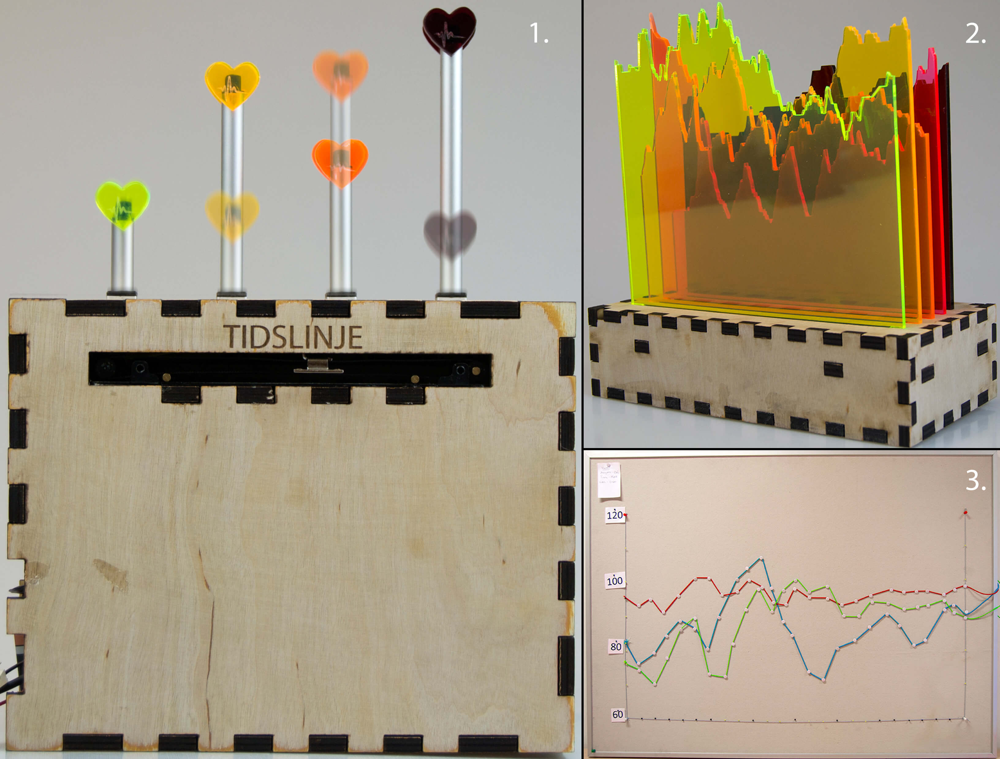

Master's Thesis: HeartTale
HeartTale is my master’s thesis project and it is a data physicalization (e.g. tangible), visualizing group heart rate data (group data is data from multiple people) from a family activity. Our research questions for the thesis were:
-
How does data physicalization foster social interaction and shared reflection in families?
-
Which design considerations are important to foster social interaction and shared reflection?
-
How do families appropriate data physicalization to customize and create memories?
-
How does heart rate relate to the experience of an activity?
We had three iterations in our project including HeartTale. The first was a domain investigation of families, where we interviewed four families in their homes. The key insight from the interviews were: families do not spend much time together during weekdays, only when eating dinner, and it is during the weekend that they do activities together.
The second iteration was six focus group with 3 families and 3 groups of people from dormitories. The reason for the dormitory groups were that they have some of the same challenges as a regular family (cleaning, grocery shopping, etc.), and families have a busy schedule, which made it hard for them to participate in our study. The focus groups explored if there was a potential for making families reflect through data physicalizations visualizing group heart rate data and what qualities these physicalizations needs to embody for doing so. Therefore, we designed 3 prototypes (see the images below) which embodies different qualities. I am not going into detail with the qualities, but the thesis is available in the bottom.

In the focus groups the participants had to play three games of Kongespil/Kubb/Viking game while we monitored their heart rate. The heart rate was utilized in the 3 prototypes, which were presented and discussed.
The results from the study showed that all participants could easily reflect and interpret the data to create fun stories about each other. Furthermore, we could outline 8 design considerations for designing data physicalization on group data for shared-reflection (see table).
| Design Considerations | Description |
|---|---|
| Primary Considerations | |
| Comparing Data | Present the whole story first, then let users dive into specifics |
| Overview of Data | Users actively investigated not just their own data but also others. The basis of storytelling is often found through the comparison of data |
| Explicit Cues | Provide explicit cues to help users interpret the context of the data (e.g., heart rate values, timestamps, and annotations |
| Interaction and Movement | Interaction invites users to investigate data, movement makes physicalizations captivating |
| Secondary Considerations | |
| Short Turnaround | Visualize data while users are still excited about the data |
| Visual Aesthetics | The data is deeply personal and subjective–the artifact should demonstrate the beauty of the data |
| Value for Young Children | Charts and numbers are often incomprehensible for children–find another way to engage them |
| Size of Artifact | The tangible qualities in smaller artifacts invite discussion in pairs, whereas larger artifacts tend to function as a gathering point including a wider audience |
In our final iteration, we used the 8 design consideration and our knowledge from previous studies to design HeartTale (the top image). HeartTale was evaluated with two families (one family had it for one week and the other for two weeks).
The results from the study, showed that families did reflect on HeartTale, and enjoyed both creating and investigating the activities. They also enjoyed showcasing HeartTale for friends and families. Furthermore, HeartTale might influence the families to do activities they usually wouldn’t, however we do not have enough empirical evidence to conclude this.

A short explanation of the system starting from the Particle Photon (microcontroller). The Photon controls LED’s, RFID reader, slider (potentiometer), and transmit data to the Firebase database. The Photon transmits RFID tag and slider values to the particle cloud. The webhook listens for specific information (RFID tag and slider value) and inject these informations into the database. Additionally, the Photon also ensures that one LED lights up according to where the finger is on the slider. The Android app on the tablet retrieves the RFID and slider value and shows pictures, heart rate, and time depending on the data. The app also enables family members to write comments, which will be saved in the database.